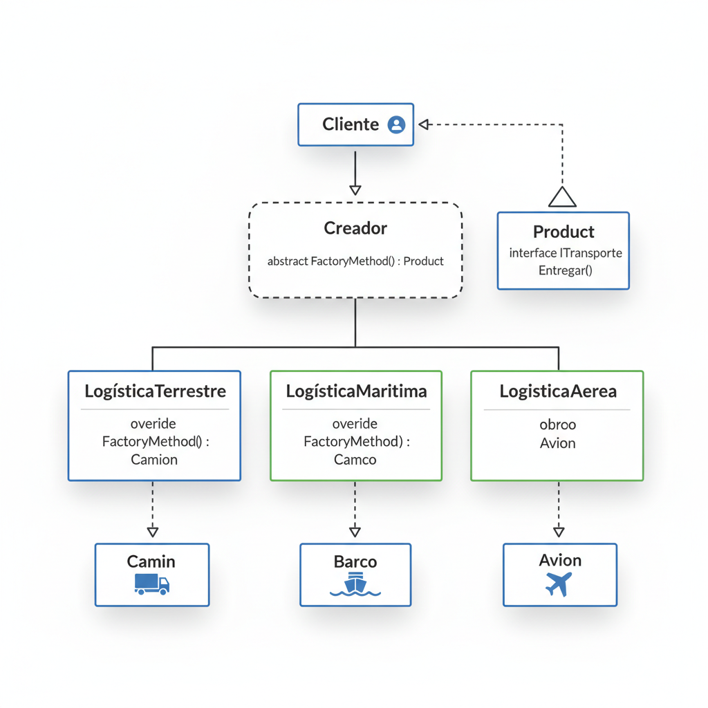
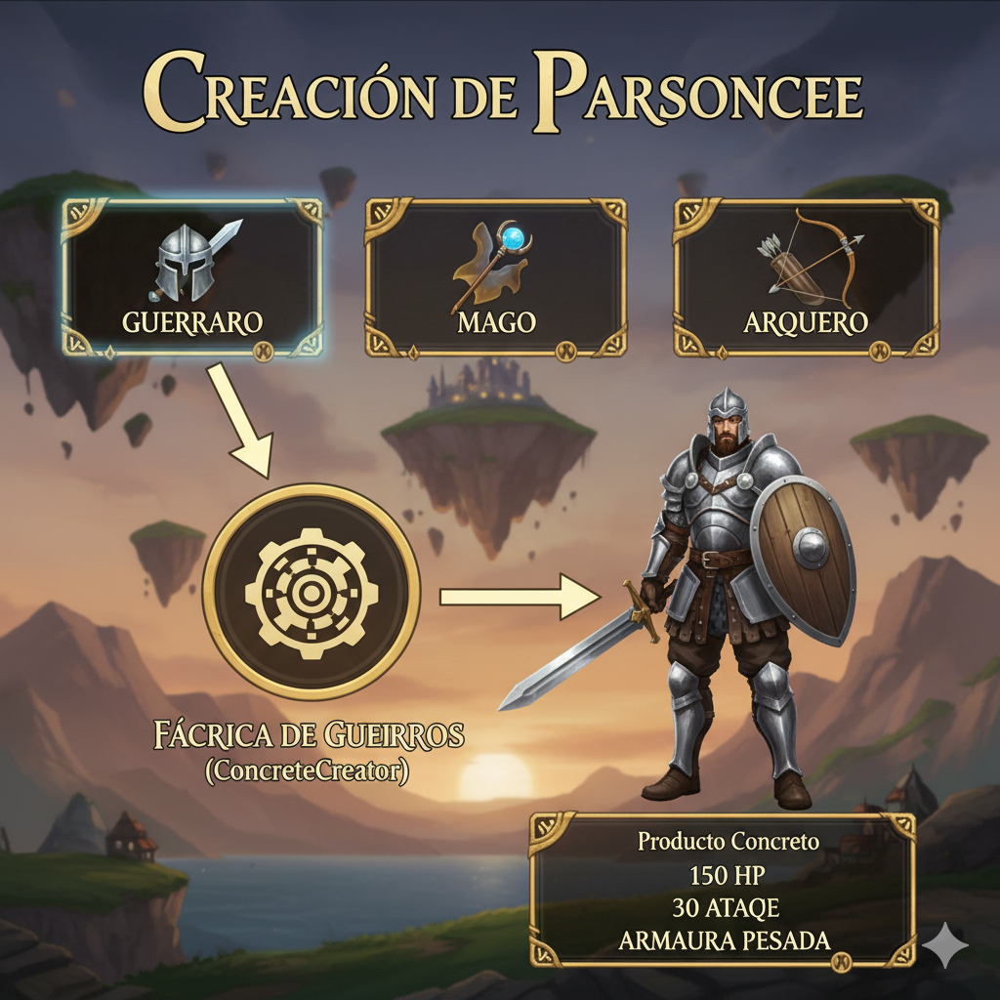
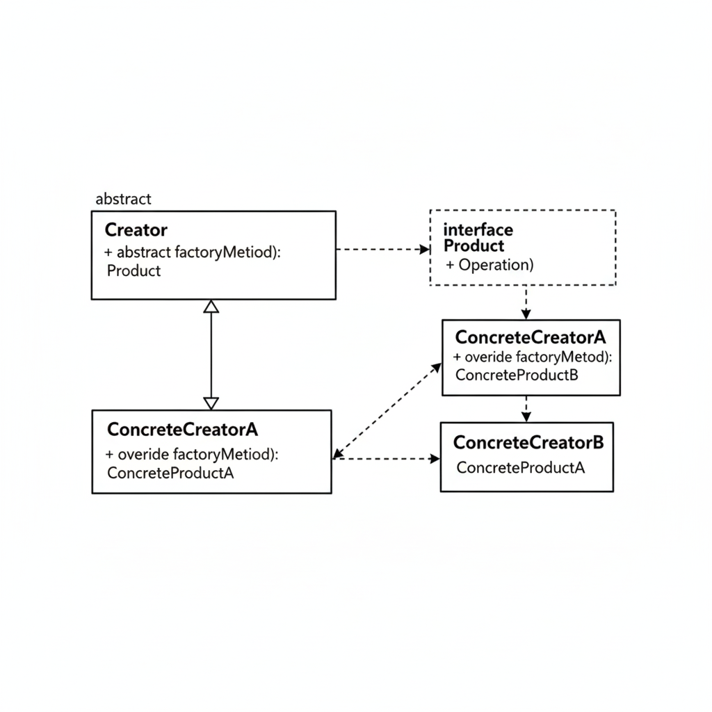

Introducción: El Patrón que Ves en Cada Menú
Hay patrones de diseño que, una vez entiendes, empiezas a reconocer en todas partes. El Patrón Factory Method es uno de ellos. Define una relación elegante: un creador que sabe qué necesita crear, pero delega en otros cómo crearlo.
Si alguna vez te has preguntado cómo un videojuego genera personajes con un solo clic, cómo una aplicación decide qué tipo de notificación enviar según la plataforma, o cómo un sistema de logística elige entre camión, barco o avión sin que el código cliente se complique, estás en el lugar correcto.
Este patrón creacional es la base de la flexibilidad en el diseño orientado a objetos. En esta guía completa, lo desglosaremos desde cero:
- Empezaremos con una analogía cotidiana del mundo real.
- Implementaremos un ejemplo completo en C# paso a paso.
- Veremos cuándo usarlo y cuándo evitarlo.
- Y terminaremos con un ejercicio práctico para que lo domines.

Prompt: Ilustración conceptual de estilo diagrama de flujo que muestra el Patrón Factory Method.
1. El Taller de Impresión: Crear Sin Saber Cómo
Imagina que trabajas en una oficina moderna y necesitas producir documentos. Vas al Taller de Producción y simplemente dices: "Necesito imprimir este archivo".
El Taller como Abstracción
El Taller tiene un método simple: ProducirDocumento(). Tú no necesitas saber si tu documento se imprimirá en:
- Una impresora láser (rápida, para texto).
- Una impresora de inyección de tinta (para color y fotos).
- Una impresora 3D (para prototipos físicos).
Simplemente entregas tu archivo y el taller específico decide qué máquina usar. Si es texto, vas al "Taller Láser". Si es una maqueta, vas al "Taller 3D".
La Magia de la Extensibilidad
Aquí está la clave: mañana, si la empresa compra una impresora de sublimación textil, ¿qué necesitas cambiar en tu forma de trabajar? Nada.
Solo se crea un nuevo "Taller de Sublimación" que implementa el mismo método ProducirDocumento(), y tú sigues haciendo lo mismo: entregas el archivo y recibes un documento producido.
Esto es exactamente el Factory Method:
- El Taller base es tu clase abstracta
Taller(el Creator). - Cada taller específico (Láser, 3D, Sublimación) es un ConcreteCreator.
- El documento producido (papel impreso, objeto 3D, camiseta) es el Product.
- Tú, el empleado, eres el código cliente que no sabe (ni le importa) qué máquina se usa.
Prompt: Ilustración de analogía del Patrón Factory Method con taller de producción.
2. El Patrón en tu Día a Día: El Selector de Personajes
Este mismo patrón lo usas cada vez que juegas un videojuego de rol.
Anatomía de la Creación de Personajes
Entras al juego. Ves la pantalla de selección: Guerrero, Mago, Arquero.
Haces clic en "Guerrero". El juego no te pregunta:
- ¿Cuántos puntos de vida quieres?
- ¿Qué arma prefieres?
- ¿Cuál es tu armadura inicial?
Simplemente crea un Guerrero completamente configurado con 150 HP, una espada de acero y armadura pesada. Todo automático.
En ese momento, acabas de usar el Factory Method:
- El Sistema de Creación: El creador abstracto que sabe que necesita un personaje.
- El Creador Concreto: La fábrica de "Guerreros" que sabe exactamente cómo configurar uno.
- El Producto: El personaje Guerrero totalmente funcional.
Si el juego añade una nueva clase "Nigromante" en un DLC, solo agregan una nueva fábrica. El código de selección de personajes no cambia ni una línea.

Prompt: Interfaz de creación de personaje en videojuego mostrando Factory Method.
3. Implementación en C#: Código Paso a Paso
Traduzcamos esto a C#. Vamos a construir el ejemplo del sistema de logística que decide entre diferentes tipos de transporte.
3.1 El Contrato del Producto (Interfaz ITransporte)
La interfaz ITransporte obliga a todos los transportes a tener un método Entregar().
/// <summary>
/// El contrato del Producto.
/// Define lo que todos los transportes deben poder hacer.
/// </summary>
public interface ITransporte
{
void Entregar();
}3.2 Los Productos Concretos (Camion y Barco)
Ahora creamos las implementaciones concretas.
/// <summary>
/// Producto Concreto 1: Transporte terrestre.
/// </summary>
public class Camion : ITransporte
{
public void Entregar()
{
Console.WriteLine("📦 Entrega realizada por TIERRA (Camión).");
}
}
/// <summary>
/// Producto Concreto 2: Transporte marítimo.
/// </summary>
public class Barco : ITransporte
{
public void Entregar()
{
Console.WriteLine("🚢 Entrega realizada por MAR (Barco).");
}
}3.3 El Creador Base (Clase Abstracta Logistica)
Esta es la clase que define el Factory Method pero no lo implementa. También contiene la lógica de negocio que usa el producto.
/// <summary>
/// El Creador (Creator).
/// Declara el Factory Method que retorna un ITransporte.
/// La lógica de negocio depende del producto, pero no sabe cuál es.
/// </summary>
public abstract class Logistica
{
// ⚡ Este es el FACTORY METHOD
// Las subclases deben implementarlo.
public abstract ITransporte CrearTransporte();
// 🔧 Lógica de negocio que usa el producto
// No sabe qué transporte concreto se está usando.
public void PlanificarEntrega()
{
// 1. Llama al Factory Method para obtener el producto
ITransporte transporte = CrearTransporte();
// 2. Usa el producto (sin saber qué es exactamente)
Console.WriteLine("\n⏳ Planificando la logística...");
transporte.Entregar();
Console.WriteLine("✅ Entrega completada.\n");
}
}3.4 Los Creadores Concretos (LogisticaTerrestre y LogisticaMaritima)
Estas subclases implementan el Factory Method y deciden qué producto concreto crear.
/// <summary>
/// Creador Concreto 1.
/// Implementa el Factory Method para crear un Camion.
/// </summary>
public class LogisticaTerrestre : Logistica
{
public override ITransporte CrearTransporte()
{
Console.WriteLine("🏭 [Fábrica Terrestre] Creando un Camión...");
return new Camion();
}
}
/// <summary>
/// Creador Concreto 2.
/// Implementa el Factory Method para crear un Barco.
/// </summary>
public class LogisticaMaritima : Logistica
{
public override ITransporte CrearTransporte()
{
Console.WriteLine("🏭 [Fábrica Marítima] Creando un Barco...");
return new Barco();
}
}3.5 Ejecutando el Código (El Cliente)
Juntamos todo en un Program.cs para ver la magia.
using System;
public class Program
{
public static void Main(string[] args)
{
Logistica miLogistica;
// Contexto 1: Necesitamos entrega terrestre
Console.WriteLine("=== ESCENARIO 1: Logística Terrestre ===");
miLogistica = new LogisticaTerrestre();
miLogistica.PlanificarEntrega();
Console.WriteLine(new string('-', 50));
// Contexto 2: Necesitamos entrega marítima
Console.WriteLine("=== ESCENARIO 2: Logística Marítima ===");
miLogistica = new LogisticaMaritima();
miLogistica.PlanificarEntrega();
Console.WriteLine(new string('-', 50));
// Extensión: Añadimos un nuevo transporte SIN modificar código existente
Console.WriteLine("=== ESCENARIO 3: Nueva Logística Aérea (Extensión) ===");
miLogistica = new LogisticaAerea();
miLogistica.PlanificarEntrega();
}
}
// 🚀 EXTENSIÓN: Añadiendo un nuevo tipo sin tocar el código anterior
public class Avion : ITransporte
{
public void Entregar()
{
Console.WriteLine("✈️ Entrega realizada por AIRE (Avión).");
}
}
public class LogisticaAerea : Logistica
{
public override ITransporte CrearTransporte()
{
Console.WriteLine("🏭 [Fábrica Aérea] Creando un Avión...");
return new Avion();
}
}Resultado en Consola:
=== ESCENARIO 1: Logística Terrestre ===
🏭 [Fábrica Terrestre] Creando un Camión...
⏳ Planificando la logística...
📦 Entrega realizada por TIERRA (Camión).
✅ Entrega completada.
--------------------------------------------------
=== ESCENARIO 2: Logística Marítima ===
🏭 [Fábrica Marítima] Creando un Barco...
⏳ Planificando la logística...
🚢 Entrega realizada por MAR (Barco).
✅ Entrega completada.
--------------------------------------------------
=== ESCENARIO 3: Nueva Logística Aérea (Extensión) ===
🏭 [Fábrica Aérea] Creando un Avión...
⏳ Planificando la logística...
✈️ Entrega realizada por AIRE (Avión).
✅ Entrega completada.4. Factory Method vs. Otros Patrones: ¿Cuándo Usar Cada Uno?
Factory Method puede confundirse con otros patrones creacionales. Aclaremos las diferencias.
Factory Method vs. Abstract Factory
- Factory Method: Crea un producto. Enfocado en delegar la creación a subclases.
- Abstract Factory: Crea familias de productos relacionados. Enfocado en crear conjuntos coherentes (ej: UI para Windows vs macOS).
Ejemplo: Factory Method crea "un botón". Abstract Factory crea "un botón, un menú y una ventana" todos con el mismo estilo.
Factory Method vs. Builder
- Factory Method: Crea objetos simples en un solo paso.
- Builder: Construye objetos complejos paso a paso (ej: configurar un pedido con múltiples opciones).
Ejemplo: Factory Method crea "una pizza Margarita". Builder te permite elegir masa, salsa, quesos, ingredientes, tamaño, cocción... paso a paso.
Factory Method vs. Prototype
- Factory Method: Crea objetos nuevos llamando al constructor.
- Prototype: Crea objetos nuevos clonando un objeto existente.
5. Diagrama UML y Definición Formal
Así es como se ve el patrón en un diagrama de clases UML formal:
Oficialmente, el Patrón Factory Method:
Es un patrón de diseño creacional que define una interfaz para crear un objeto, pero permite que las subclases alteren el tipo de objetos que se crean. Factory Method delega la instanciación a las subclases.
Los Cuatro Actores del Patrón
- Product (
ITransporte): La interfaz común de los objetos que el factory method crea. - ConcreteProduct (
Camion,Barco): Las implementaciones concretas de Product. - Creator (
Logistica): Declara el factory method que retorna un Product. Contiene lógica de negocio que usa el producto. - ConcreteCreator (
LogisticaTerrestre,LogisticaMaritima): Implementa el factory method para crear un ConcreteProduct específico.

Prompt: Diagrama UML claro del Patrón Factory Method con Creator, ConcreteCreator, Product y ConcreteProduct.
⚠️ Cuándo NO Usar el Patrón Factory Method
Factory Method es elegante, pero no es la solución para todo. Usarlo mal puede complicar tu código innecesariamente.
Evítalo Si...
- Solo tienes un tipo de producto: Si solo vas a crear
Camiony nunca habrá otro transporte, no necesitas el patrón. Usanew Camion()directamente. - La creación es trivial: Si crear el objeto es solo llamar al constructor sin lógica adicional, el patrón añade complejidad innecesaria.
- No necesitas extensibilidad: Si sabes que tu sistema nunca necesitará nuevos tipos de productos, YAGNI (You Aren't Gonna Need It).
Problemas Comunes
- Jerarquías paralelas: Terminas con dos jerarquías de clases paralelas (Products y Creators). Esto puede ser confuso si no está bien documentado.
- Over-engineering: Usar Factory Method para crear objetos simples como
new Usuario(nombre, email)es matar moscas a cañonazos.
Alternativas Comunes
- Simple Factory (no es un patrón GoF): Un método estático que decide qué crear basado en un parámetro. Más simple pero menos flexible.
- Abstract Factory: Si necesitas crear familias de objetos relacionados.
- Dependency Injection: Si quieres invertir completamente el control de las dependencias.
💪 Ejercicio para Practicar
¿Listo para dominar el patrón? Implementa un sistema de notificaciones multiplataforma:
Requisitos
- Creador Base: Crea una clase abstracta
ServicioNotificacioncon un método abstractoCrearNotificacion()y un método concretoEnviarMensaje(string mensaje)que:- Llama a
CrearNotificacion()para obtener una notificación. - Llama al método
Enviar(mensaje)de la notificación.
- Llama a
- Productos: Crea una interfaz
INotificacioncon el métodoEnviar(string mensaje). Luego crea 3 implementaciones:NotificacionEmail: Simula enviar un email.NotificacionSMS: Simula enviar un SMS.NotificacionPush: Simula enviar una notificación push.
- Creadores Concretos: Crea 3 servicios que implementen el Factory Method para cada tipo de notificación.
Bonus
Añade una cuarta notificación: NotificacionSlack, con su correspondiente ServicioSlack, sin modificar ninguna de las clases existentes. Esto demuestra el poder del Principio Abierto/Cerrado.
Conclusión: La Flexibilidad Elegante
El Patrón Factory Method es fundamental para escribir código extensible y mantenible. Es la diferencia entre un sistema rígido que requiere modificar código existente cada vez que añades una funcionalidad, y un sistema flexible que acepta extensiones sin dolor.
El taller de impresión sigue sin saber qué máquina específica usarás mañana, y tu código cliente sigue sin preocuparse. Simplemente pide "un documento", y el patrón se encarga de conectar la abstracción con la implementación correcta.
La próxima vez que veas un menú de selección, una pantalla de configuración con opciones, o un sistema que "adapta" su comportamiento según el contexto... ya sabes qué patrón está trabajando silenciosamente detrás.
Y ahora que conoces el secreto, cada vez que hagas clic en "Crear nuevo personaje", sabrás exactamente qué está pasando bajo el capó. 🏭✨